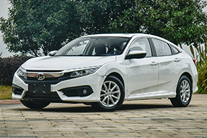
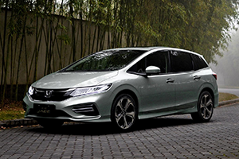
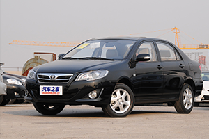

ABOUT US
广东江门百圣汽车服务有限公司
START（原PP租车）隶属于爱车汇（北京）科技有限责任公司，是一个基于互联网技术的便捷的汽车共享平台，2012年5月，START于新加坡开始筹备运营。2013年8月，具有浓厚中国大陆背景的START团队带着一腔热情在中国大陆成功推行START平台，正式完成在亚洲金融中心新加坡和中国首都的布局。
START是一个“共享有车生活平台”，为酷爱汽车及自驾人群提供预订和体验遍布国内主要城市超过万款丰富车型的用车服务。START致力于打造基于丰富车型体验的共享有车生活方式。在这里，可以尽情体验任何你想开的车并分享你的感悟，结识跟你有共同爱车兴趣的朋友。
无论是在周末尽享自驾游乐趣，或在工作日与爱人度过一个甜蜜温馨的夜晚，又或与亲朋好友共度一个完美长假，START都能以共享的方式，带给你比传统用车更丰富更有品质，比买车性价比更高的用车体验。通过更专业的用车指南，更纯粹的汽车分享社区，更安全的保险保障服务，让有车生活来的更简单。同时，START也提供一种简单高效的方式，让人们可以利用闲置爱车赚取可观收益，并将爱车展示和分享给渴望体验不同精彩车型的用户。
START是一段旅程的开始，一个梦想的开始，也是一种生活方式的开始。START的使命是让共享成就梦想，重新定义有车生活，愿景成为共享有车生活第一品牌。



扫描二维码关注我们